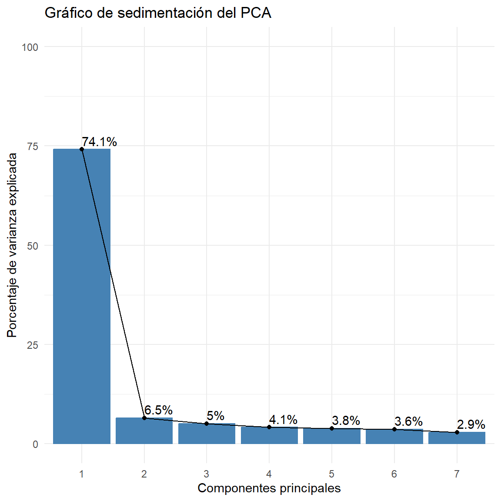
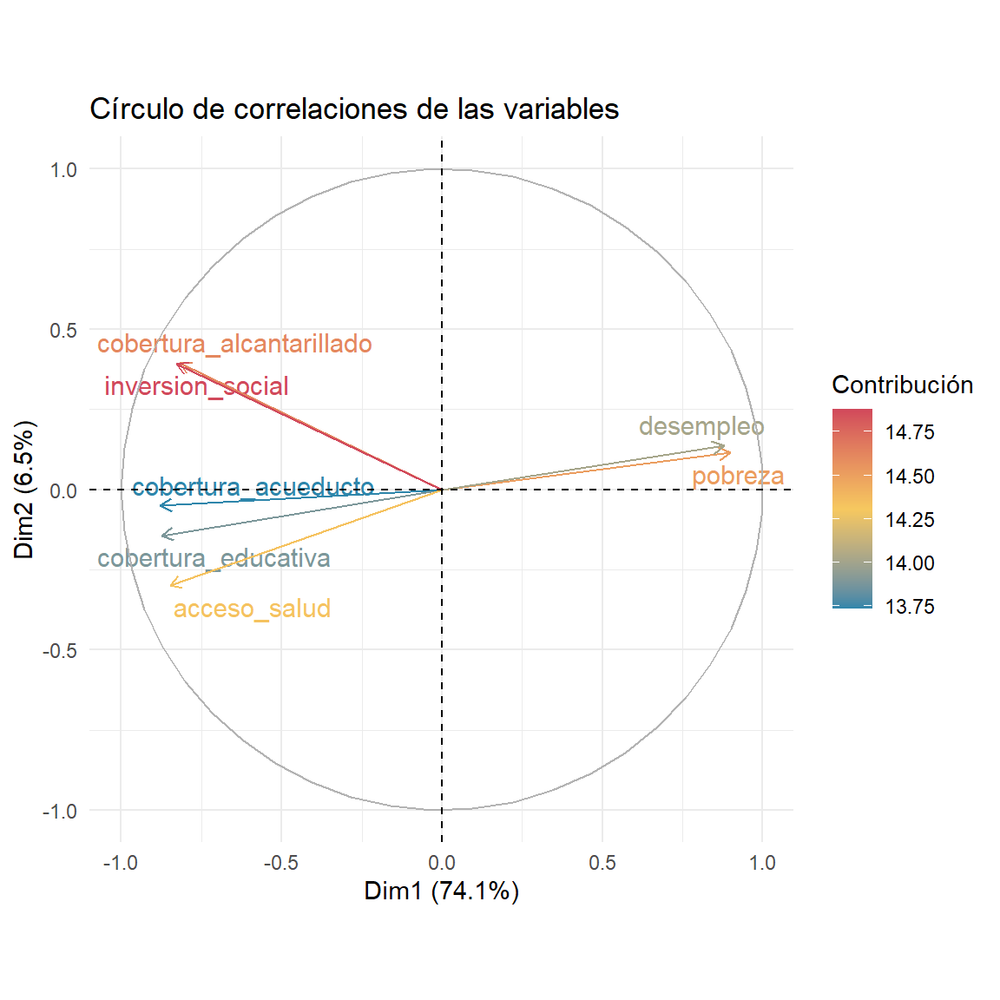
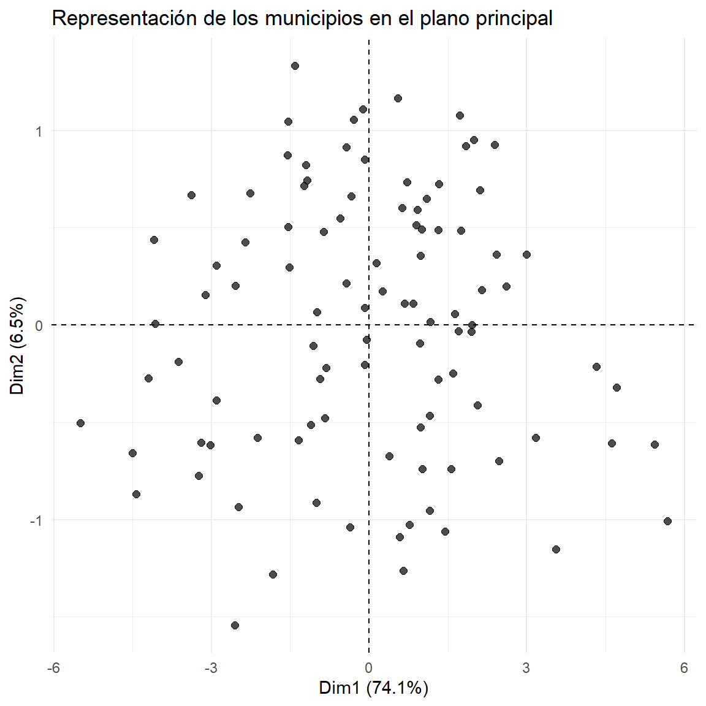
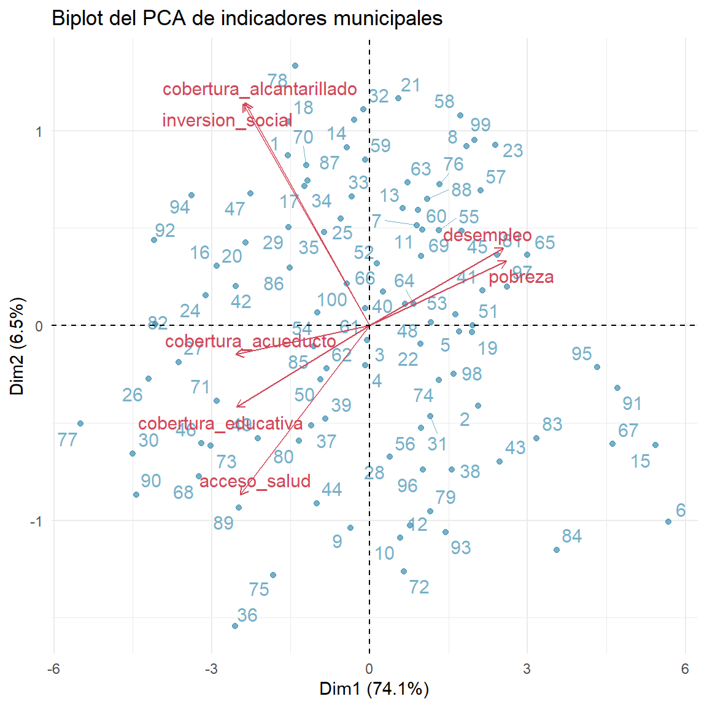
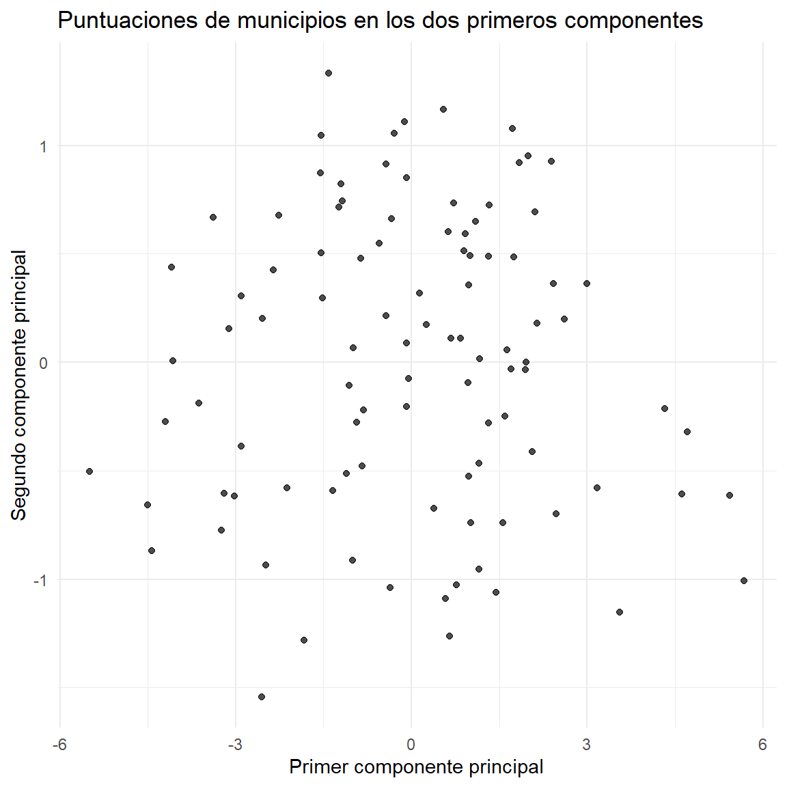
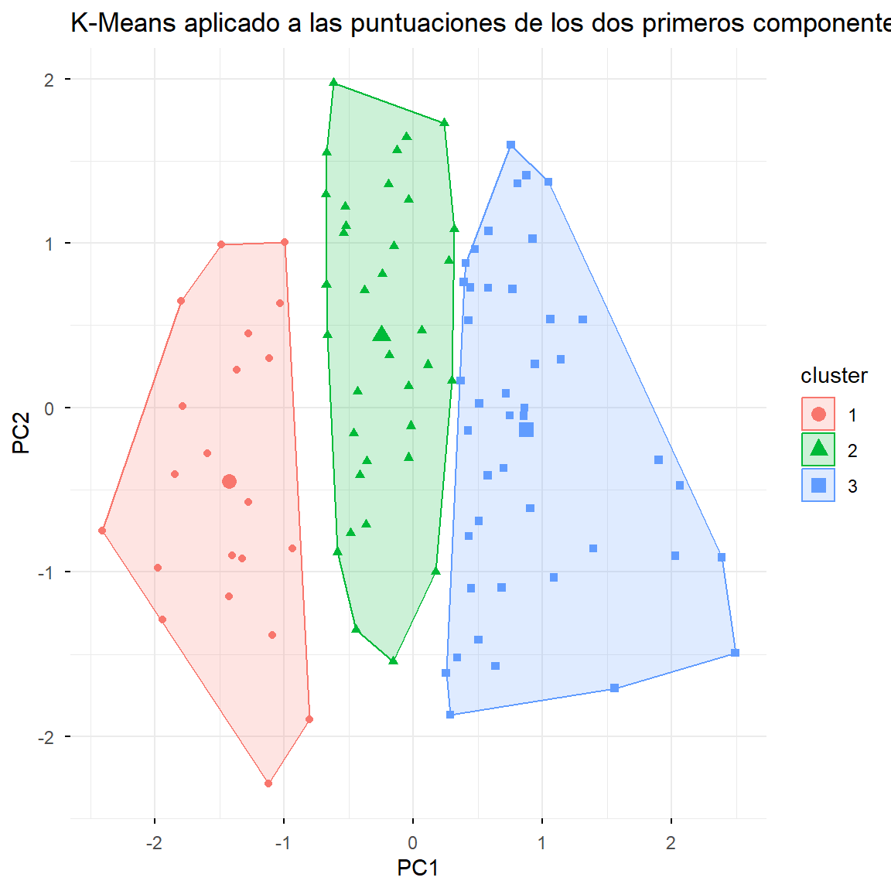

En la administración pública es frecuente trabajar con bases de datos que contienen numerosos indicadores relacionados entre sí. Por ejemplo, para estudiar las condiciones de desarrollo de los municipios se pueden considerar indicadores de pobreza, educación, salud, empleo, vivienda, servicios públicos e inversión social.
Cuando se utilizan muchas variables, el análisis puede resultar complejo, especialmente si existe correlación entre ellas. El Análisis de Componentes Principales (PCA, por sus siglas en inglés) es una técnica estadística multivariada que permite resumir la información de un conjunto de variables cuantitativas mediante un número menor de componentes no correlacionados entre sí.
El PCA se utiliza para explorar patrones, reducir la dimensionalidad de los datos, visualizar observaciones y construir indicadores sintéticos. No reemplaza el análisis sustantivo de los fenómenos públicos ni demuestra relaciones causales.
Este módulo presenta los fundamentos del PCA, su lógica matemática, la implementación en R y la interpretación de los resultados mediante un ejemplo de indicadores municipales.
2.1 .Resultados de aprendizaje
Al finalizar el módulo, el estudiante estará en capacidad de:
Explicar el propósito del análisis de componentes principales.
Reconocer cuándo es pertinente aplicar PCA.
Comprender la relación entre varianza, covarianza, correlación y componentes principales.
Estandarizar variables y preparar una matriz de datos para el análisis.
Implementar PCA mediante prcomp() en R.
Interpretar valores propios, proporción de varianza explicada y cargas factoriales.
Utilizar gráficos de sedimentación, círculo de correlaciones y biplot.
Interpretar puntuaciones de los componentes para comparar municipios.
Reconocer las limitaciones y precauciones del uso de indicadores sintéticos en la gestión pública.
3 .Fundamentos del PCA
3.1 .¿Qué es el PCA?
El Análisis de Componentes Principales es una técnica de reducción de dimensionalidad que transforma un conjunto de variables cuantitativas posiblemente correlacionadas en un conjunto más pequeño de nuevas variables llamadas componentes principales.
Cada componente es una combinación lineal de las variables originales. Los componentes se construyen de modo que:
El primer componente explica la mayor proporción posible de la variabilidad total.
El segundo componente explica la mayor proporción posible de la variabilidad restante y es ortogonal al primero.
Los componentes siguientes explican progresivamente la variabilidad restante y son ortogonales a los anteriores.
El propósito es conservar una parte importante de la información original utilizando menos dimensiones.
3.2 .Ejemplo en administración pública
Una gobernación desea estudiar las condiciones de desarrollo de 50 municipios. Dispone de indicadores relacionados con:
Pobreza multidimensional.
Cobertura educativa.
Cobertura de acueducto.
Cobertura de alcantarillado.
Acceso a servicios de salud.
Desempleo.
Inversión social por habitante.
Algunas variables pueden estar relacionadas. Por ejemplo, la cobertura de acueducto y alcantarillado podrían presentar una correlación positiva. El PCA permite resumir parte de la información común en componentes principales.
La técnica puede facilitar la exploración de perfiles territoriales y la construcción de indicadores sintéticos, siempre que se interpreten cuidadosamente las variables y las direcciones de los componentes.
3.3 .¿Por qué reducir la dimensionalidad?
Cuando una base tiene muchas variables, pueden presentarse dificultades como:
Correlaciones elevadas entre variables.
Dificultad para visualizar observaciones en muchas dimensiones.
Redundancia de información.
Complejidad para resumir y comunicar resultados.
Dificultad para construir modelos posteriores con variables altamente relacionadas.
PCA permite representar los datos en menos dimensiones, procurando conservar la mayor cantidad posible de variabilidad.
3.4 .PCA y análisis de conglomerados
PCA y K-Means tienen propósitos diferentes:
Característica
PCA
K-Means
Objetivo
Reducir dimensiones
Formar grupos
Resultado
Componentes principales
Conglomerados
Requiere definir K
No
Sí
Variable respuesta
No requiere
No requiere
Uso habitual
Resumir y visualizar información
Identificar grupos de observaciones
PCA puede utilizarse antes de un análisis de conglomerados para representar los datos en menos dimensiones. Sin embargo, no siempre es necesario ni garantiza que el agrupamiento posterior sea mejor.
4 .Fundamentos matemáticos del PCA
4.1 .Matriz de datos
Suponga que se tienen n municipios y p indicadores. La matriz de datos se representa como:
Las filas representan municipios y las columnas representan indicadores.
4.2 .Centrado y estandarización
Antes de aplicar PCA se suele centrar cada variable restando su media:
X_{c,ij}=X_{ij}-\bar X_j
Si las variables tienen unidades o escalas diferentes, se recomienda estandarizarlas:
Z_{ij}=\frac{X_{ij}-\bar X_j}{s_j}
Donde:
X_{ij}: valor observado de la variable j en la unidad i.
\bar X_j: media de la variable j.
s_j: desviación estándar de la variable j.
La estandarización hace que las variables tengan media cero y desviación estándar uno. De este modo, una variable expresada en pesos no domina automáticamente a otra expresada en porcentajes.
La decisión de estandarizar debe considerar el significado de las variables. Si todas están en unidades comparables y sus escalas son intencionales, el centrado sin escalado puede ser apropiado.
4.3 .Matriz de covarianzas y matriz de correlaciones
El PCA puede obtenerse a partir de la matriz de covarianzas o de la matriz de correlaciones.
La covarianza entre dos variables X_j y X_k se define como:
La matriz de correlaciones contiene las correlaciones entre todos los pares de variables. Cuando se estandarizan las variables, el PCA basado en la matriz de covarianzas de los datos estandarizados equivale al PCA basado en la matriz de correlaciones de las variables originales.
4.4 .Valores y vectores propios
El PCA se basa en la descomposición de la matriz de covarianzas o correlaciones. Para una matriz S, se buscan valores propios \lambda y vectores propios v que satisfacen:
Sv=\lambda v
Los valores propios representan la varianza explicada por cada componente. Los vectores propios determinan las ponderaciones de las variables originales en cada componente.
Cada componente es una combinación lineal de las variables originales estandarizadas:
PC_1=a_{11}Z_1+a_{12}Z_2+\cdots+a_{1p}Z_p
PC_2=a_{21}Z_1+a_{22}Z_2+\cdots+a_{2p}Z_p
Los coeficientes a_{ij} corresponden a las ponderaciones asociadas a los vectores propios.
Los componentes son ortogonales entre sí, es decir, no están correlacionados en la muestra bajo la construcción estándar del PCA.
4.6 .Proporción de varianza explicada
La proporción de varianza explicada por el componente j se calcula como:
PVE_j=\frac{\lambda_j}{\sum_{k=1}^{p}\lambda_k}
La proporción acumulada hasta el componente m es:
PVE_{acum}(m)=
\sum_{j=1}^{m}PVE_j
Por ejemplo, si los dos primeros componentes explican 72 % de la variabilidad total, una representación en dos dimensiones conserva el 72 % de la variabilidad según el criterio del PCA.
5 .Criterios para seleccionar el número de componentes
No existe una regla única para determinar cuántos componentes conservar. Se recomienda combinar criterios estadísticos y sustantivos.
5.1 .Porcentaje de varianza acumulada
Se puede seleccionar el menor número de componentes que alcance un porcentaje acumulado considerado suficiente para el propósito del análisis. En aplicaciones exploratorias suele examinarse el rango de 70 % a 85 %, pero no es un umbral universal.
5.2 .Gráfico de sedimentación (scree plot)
Representa los valores propios en orden descendente. Se busca un punto de inflexión a partir del cual la varianza explicada por los componentes adicionales disminuye menos.
5.3 .Criterio de Kaiser
Cuando el PCA se realiza sobre variables estandarizadas, el criterio de Kaiser propone conservar componentes con valores propios mayores que 1.
Este criterio es una referencia práctica, no una regla definitiva. Puede retener demasiados o muy pocos componentes según el conjunto de datos.
5.4 .Interpretabilidad
Los componentes seleccionados deben tener una interpretación razonable a partir de las variables que presentan mayores cargas. Un componente que explica mucha varianza pero no tiene interpretación útil puede no ser adecuado para construir un indicador de gestión.
6 .Cargas, puntuaciones y contribuciones
6.1 .Cargas de las variables
Las cargas permiten estudiar la relación entre las variables originales y los componentes. En R, la salida de prcomp() presenta las rotaciones, es decir, los coeficientes de los vectores propios.
Una carga de magnitud elevada indica que la variable tiene un peso importante en la definición del componente. El signo indica la dirección de la relación con el componente.
El signo global de un componente es arbitrario: multiplicar todos sus coeficientes por -1 produce el mismo componente con orientación opuesta. Por eso la interpretación debe centrarse en los signos relativos y en las magnitudes.
6.2 .Puntuaciones de los componentes
Las puntuaciones (scores) son los valores de cada observación en los nuevos ejes. Permiten comparar municipios según los componentes retenidos.
Por ejemplo, si el primer componente resume condiciones de cobertura de servicios y educación, las puntuaciones permiten identificar municipios con valores relativamente altos o bajos en esa dimensión.
6.3 .Biplot
El biplot combina en una misma representación:
Las observaciones, representadas mediante puntos.
Las variables, representadas mediante vectores o flechas.
Permite explorar qué municipios presentan valores altos o bajos en determinadas combinaciones de variables y cuáles indicadores tienden a variar conjuntamente.
La interpretación depende del método de escalamiento y de la calidad de la representación en los componentes mostrados.
7 .Preparación del entorno de trabajo en R
7.1 .Instalación y carga de paquetes
Ver código
# Ejecutar una sola vez si los paquetes no están instalados# install.packages(c("tidyverse", "factoextra", "corrplot"))library(tidyverse)library(factoextra)library(corrplot)
Funciones y paquetes principales:
prcomp(): función base de R para realizar PCA mediante descomposición en valores singulares.
summary(): resume la importancia de los componentes.
factoextra: facilita la visualización de resultados.
corrplot: permite representar matrices de correlaciones.
7.2 .Revisión de datos
Antes de ejecutar PCA se debe:
Seleccionar variables cuantitativas pertinentes.
Revisar datos faltantes.
Examinar valores atípicos y errores de captura.
Verificar que las variables tengan variabilidad.
Decidir si se requiere estandarización.
PCA no admite valores faltantes en su implementación habitual mediante prcomp(). Debe definirse un tratamiento apropiado antes del análisis.
8 ,Ejemplo completo
PCA de indicadores municipales
8.1 .Planteamiento del problema
Una gobernación desea resumir un conjunto de indicadores de desarrollo municipal para explorar las principales dimensiones que caracterizan a sus territorios.
Se utilizarán los siguientes indicadores:
Variable
Descripción
pobreza
Pobreza multidimensional (%)
cobertura_educativa
Cobertura educativa (%)
cobertura_acueducto
Cobertura de acueducto (%)
cobertura_alcantarillado
Cobertura de alcantarillado (%)
acceso_salud
Acceso a servicios de salud (%)
desempleo
Desempleo (%)
inversion_social
Inversión social por habitante (miles de pesos)
Los datos que se generan a continuación son simulados y tienen fines pedagógicos. No corresponden a indicadores oficiales.
municipio pobreza cobertura_educativa cobertura_acueducto
Length:100 Min. : 3.569 Min. :61.30 Min. :32.46
Class :character 1st Qu.:22.519 1st Qu.:72.76 1st Qu.:59.27
Mode :character Median :28.885 Median :77.27 Median :68.17
Mean :29.270 Mean :77.82 Mean :68.56
3rd Qu.:36.665 3rd Qu.:82.59 3rd Qu.:76.40
Max. :50.376 Max. :94.05 Max. :97.21
cobertura_alcantarillado acceso_salud desempleo inversion_social
Min. :20.32 Min. :62.56 Min. : 4.146 Min. :278.5
1st Qu.:54.12 1st Qu.:72.38 1st Qu.: 9.759 1st Qu.:576.0
Median :62.84 Median :75.67 Median :12.088 Median :654.5
Mean :61.91 Mean :76.11 Mean :11.910 Mean :645.6
3rd Qu.:69.93 3rd Qu.:80.72 3rd Qu.:14.156 3rd Qu.:718.2
Max. :90.70 Max. :92.06 Max. :18.310 Max. :859.8
Las correlaciones ayudan a identificar variables que presentan información compartida. Sin embargo, el PCA puede aplicarse aun cuando no todas las variables estén altamente correlacionadas; la utilidad de la reducción dependerá de la estructura global de los datos.
9 .Implementación del PCA con prcomp()
9.1 .Estandarización y ajuste del modelo
Se utilizará scale. = TRUE para centrar y escalar las variables.
scale. = TRUE: divide cada variable por su desviación estándar.
La función prcomp() realiza el cálculo mediante descomposición en valores singulares, una estrategia numéricamente estable para obtener los componentes principales.
La tabla permite determinar cuánta variabilidad explica cada componente y cuánta se acumula al conservar varios componentes.
9.4 .Gráfico de sedimentación
Ver código
fviz_eig( modelo_pca,addlabels =TRUE,ylim =c(0, 100)) +labs(title ="Gráfico de sedimentación del PCA",x ="Componentes principales",y ="Porcentaje de varianza explicada" ) +theme_minimal()

El gráfico ayuda a observar dónde disminuye la contribución marginal de los componentes. Se debe interpretar junto con la varianza acumulada y la utilidad sustantiva.
Las columnas corresponden a los componentes y las filas a las variables originales. Los coeficientes muestran cómo se construye cada componente a partir de las variables estandarizadas.
Para facilitar la interpretación de los dos primeros componentes:
Identifique las variables con coeficientes de mayor magnitud.
Observe si sus signos son iguales u opuestos.
Relacione el patrón con el fenómeno público estudiado.
Evite asignar nombres a un componente basándose en una sola variable.
Recuerde que el signo de todo el componente puede invertirse sin cambiar la solución.
Por ejemplo, si un componente presenta coeficientes positivos elevados para cobertura educativa, acueducto y salud, y negativos para pobreza y desempleo, podría interpretarse como una dimensión de condiciones favorables de desarrollo y acceso a servicios. La interpretación concreta debe basarse en los resultados obtenidos.
10.2 .Gráfico de variables
Ver código
fviz_pca_var( modelo_pca,col.var ="contrib",gradient.cols =c("#2E86AB", "#F6C85F", "#D1495B"),repel =TRUE) +labs(title ="Círculo de correlaciones de las variables",color ="Contribución" ) +theme_minimal()

Interpretación general:
Flechas próximas: variables con correlación positiva.
Flechas en direcciones opuestas: variables con correlación negativa.
Flechas aproximadamente perpendiculares: relación lineal cercana a cero en la representación.
Flechas más largas: variables mejor representadas en el plano mostrado.
Estas interpretaciones se refieren a la proyección en los componentes seleccionados; no necesariamente describen toda la estructura de correlaciones.
10.3 .Gráfico de individuos
Ver código
fviz_pca_ind( modelo_pca,geom ="point",pointsize =2,alpha.ind =0.7,repel =TRUE) +labs(title ="Representación de los municipios en el plano principal" ) +theme_minimal()

Los municipios próximos presentan perfiles similares en las dimensiones representadas. Los puntos alejados del centro tienen puntuaciones más extremas en el plano de los componentes mostrados.
10.4 .Biplot
Ver código
fviz_pca_biplot( modelo_pca,repel =TRUE,col.var ="#D1495B",col.ind ="#2E86AB",alpha.ind =0.65) +labs(title ="Biplot del PCA de indicadores municipales" ) +theme_minimal()

El biplot combina la ubicación de los municipios y la dirección de las variables. Se debe recordar que su lectura depende del escalamiento gráfico y de la proporción de varianza explicada por los componentes representados.
11 .Puntuaciones e interpretación de municipios
11.1 .Obtener puntuaciones
Las puntuaciones de los componentes se encuentran en modelo_pca$x.
# A tibble: 10 × 3
municipio PC1 PC2
<chr> <dbl> <dbl>
1 Municipio 006 5.68 -1.01
2 Municipio 015 5.44 -0.614
3 Municipio 091 4.71 -0.320
4 Municipio 067 4.62 -0.608
5 Municipio 095 4.33 -0.215
6 Municipio 084 3.55 -1.15
7 Municipio 083 3.17 -0.578
8 Municipio 065 2.99 0.361
9 Municipio 097 2.61 0.198
10 Municipio 043 2.48 -0.698
Las puntuaciones altas o bajas solo tienen significado en relación con las cargas y la orientación del componente. No debe asumirse que un valor alto siempre representa mejores condiciones.
11.3 .Visualizar las puntuaciones
Ver código
ggplot( municipios_pca,aes(x = PC1, y = PC2, label = municipio)) +geom_point(alpha =0.7) +labs(title ="Puntuaciones de municipios en los dos primeros componentes",x ="Primer componente principal",y ="Segundo componente principal" ) +theme_minimal()

12 .Construcción de un indicador sintético: precauciones
En algunos estudios se utiliza el primer componente como un indicador sintético. Esta decisión puede ser útil cuando el primer componente resume una dimensión coherente y explica una proporción importante de la variabilidad.
Sin embargo, se deben considerar los siguientes aspectos:
El primer componente maximiza la varianza explicada, no necesariamente la relevancia normativa o social.
Las ponderaciones se derivan de la estructura estadística de los datos, no de prioridades de política pública.
La dirección del componente es arbitraria y debe orientarse para facilitar su interpretación.
El indicador depende de las variables y observaciones incluidas.
Los resultados pueden cambiar al actualizar la base.
No debe utilizarse como única medida para asignar recursos o clasificar personas y territorios.
Si se desea construir un índice de desarrollo, se requiere justificar las dimensiones, el tratamiento de las variables, la orientación de los indicadores y la pertinencia de las ponderaciones.
13 .PCA como paso previo a K-Means
En algunas aplicaciones se utiliza PCA para reducir las dimensiones antes de aplicar K-Means. Por ejemplo, se pueden conservar los primeros componentes que expliquen una proporción razonable de la variabilidad y utilizar sus puntuaciones para agrupar municipios.
Ejemplo ilustrativo con los dos primeros componentes:
Ver código
puntuaciones_2d <- modelo_pca$x[, 1:2]set.seed(123)kmeans_pca <-kmeans( puntuaciones_2d,centers =3,nstart =30)fviz_cluster(list(data = puntuaciones_2d,cluster = kmeans_pca$cluster ),geom ="point",ellipse =TRUE,ggtheme =theme_minimal()) +labs(title ="K-Means aplicado a las puntuaciones de los dos primeros componentes" )

Este procedimiento facilita el agrupamiento en un espacio reducido, pero al conservar solo dos componentes se descarta parte de la variabilidad. La decisión debe justificarse y se deben comparar los resultados con el agrupamiento realizado sobre las variables originales estandarizadas.
14 .Buenas prácticas y limitaciones
Antes de aplicar PCA en una entidad pública, conviene:
Definir claramente la pregunta de análisis.
Seleccionar indicadores con fundamento conceptual.
Revisar valores faltantes, errores y valores extremos.
Examinar las correlaciones entre variables.
Justificar la estandarización.
Evaluar la varianza explicada y las cargas.
Revisar la estabilidad de los componentes ante cambios en la muestra.
Documentar las transformaciones y decisiones.
Evitar interpretar los componentes como dimensiones causales.
Considerar las implicaciones distributivas y territoriales de cualquier indicador derivado.
PCA es sensible a valores atípicos, porque se basa en varianzas y covarianzas. Cuando hay observaciones extremas, se debe estudiar su origen y considerar análisis de sensibilidad o métodos robustos.
15 .Actividades para el estudiante
15.1 .Actividad 1.
Comprensión conceptual
Responda con sus propias palabras:
¿Qué es el Análisis de Componentes Principales?
¿Cuál es el objetivo de reducir la dimensionalidad?
¿Qué diferencia existe entre una variable original y un componente principal?
¿Qué representan los valores propios?
¿Cómo se calcula la proporción de varianza explicada?
¿Qué información proporcionan las cargas de los componentes?
¿Qué son las puntuaciones de los componentes?
¿Por qué puede ser necesario estandarizar las variables?
¿Qué representa el gráfico de sedimentación?
¿Por qué PCA no permite establecer relaciones causales?
15.2 .Actividad 2.
PCA de indicadores municipales
Utilizando la base datos_municipios:
Seleccione al menos cinco indicadores.
Construya la matriz de correlaciones.
Identifique pares de variables con correlaciones elevadas.
Aplique PCA mediante prcomp().
Obtenga los valores propios.
Calcule la varianza explicada y acumulada.
Construya el gráfico de sedimentación.
Determine cuántos componentes conservaría y justifique.
Interprete las cargas de los dos primeros componentes.
Identifique los municipios con puntuaciones extremas.
Redacte conclusiones para la planeación territorial.
15.3 .Actividad 3.
PCA en instituciones educativas
Una secretaría de educación desea resumir indicadores de 120 instituciones educativas. Genere o utilice una base con las siguientes variables:
Variable
Descripción
matricula
Número de estudiantes matriculados
docentes
Número de docentes
desercion
Tasa de deserción (%)
internet
Cobertura de internet (%)
saber
Puntaje promedio en pruebas estandarizadas
inversion
Inversión anual por estudiante
asistencia
Porcentaje promedio de asistencia
Desarrolle:
Explore la base y verifique valores faltantes.
Seleccione las variables cuantitativas.
Examine la matriz de correlaciones.
Estandarice las variables.
Ajuste un PCA.
Calcule los valores propios y la varianza acumulada.
Seleccione el número de componentes.
Interprete las cargas de los componentes seleccionados.
Represente las instituciones en un gráfico de individuos.
Proponga cómo utilizar los resultados para orientar estrategias de apoyo educativo.
15.4 .Actividad 4.
Comparación con y sin estandarización
Aplique PCA a una misma base:
Utilice scale. = FALSE.
Utilice scale. = TRUE.
Compare los valores propios y la varianza explicada.
Compare las cargas de los componentes.
Explique qué variables dominan el análisis sin estandarizar.
Justifique cuál alternativa es más apropiada para el problema estudiado.
15.5 .Actividad 5.
PCA y K-Means
Aplique PCA a los indicadores municipales.
Seleccione los componentes que considere adecuados.
Utilice sus puntuaciones como entrada para K-Means.
Compare el agrupamiento obtenido con el realizado sobre las variables originales.
Evalúe las diferencias en los grupos.
Discuta las ventajas y limitaciones de reducir dimensiones antes del agrupamiento.
16 .Reto de aplicación
Seleccione un problema de administración pública en el que se disponga de múltiples indicadores cuantitativos. Algunas posibilidades son:
Construcción de dimensiones de desarrollo municipal.
Análisis de indicadores de calidad educativa.
Estudio de condiciones de acceso a servicios de salud.
Caracterización de dependencias públicas.
Análisis de infraestructura y servicios públicos.
Elabore un informe que contenga:
Descripción del problema.
Objetivo del PCA.
Unidad de análisis y descripción de las variables.
Justificación de la selección de indicadores.
Preparación y estandarización de los datos.
Matriz de correlaciones.
Resultados del PCA.
Selección del número de componentes.
Interpretación de cargas y puntuaciones.
Visualizaciones y conclusiones.
Limitaciones y recomendaciones para la gestión pública.
17 .Conclusiones
El Análisis de Componentes Principales permite resumir la información de múltiples variables cuantitativas mediante un número reducido de componentes no correlacionados. Su fundamento se encuentra en la descomposición de la matriz de covarianzas o correlaciones y en la identificación de direcciones que explican la mayor variabilidad posible de los datos.
En R, la función prcomp() facilita su implementación. La interpretación requiere examinar los valores propios, la varianza explicada, las cargas y las puntuaciones, además de utilizar gráficos como el de sedimentación, el círculo de correlaciones y el biplot.
En la administración pública, PCA puede facilitar el análisis de indicadores territoriales e institucionales, pero sus componentes son construcciones estadísticas y no dimensiones causales ni prioridades de política pública por sí mismas. Su uso debe acompañarse de justificación conceptual, transparencia y evaluación de sus limitaciones.
18 .Referencias y recursos
Jolliffe, I. T., & Cadima, J. (2016). Principal component analysis: A review and recent developments. Philosophical Transactions of the Royal Society A, 374(2065), 20150202. https://doi.org/10.1098/rsta.2015.0202
Jolliffe, I. T. (2002). Principal Component Analysis (2nd ed.). Springer.
Abdi, H., & Williams, L. J. (2010). Principal component analysis. Wiley Interdisciplinary Reviews: Computational Statistics, 2(4), 433–459. https://doi.org/10.1002/wics.101
Documentación de stats::prcomp(): https://stat.ethz.ch/R-manual/R-devel/library/stats/html/prcomp.html
Documentación de factoextra: https://cran.r-project.org/package=factoextra
Documentación de corrplot: https://cran.r-project.org/package=corrplot